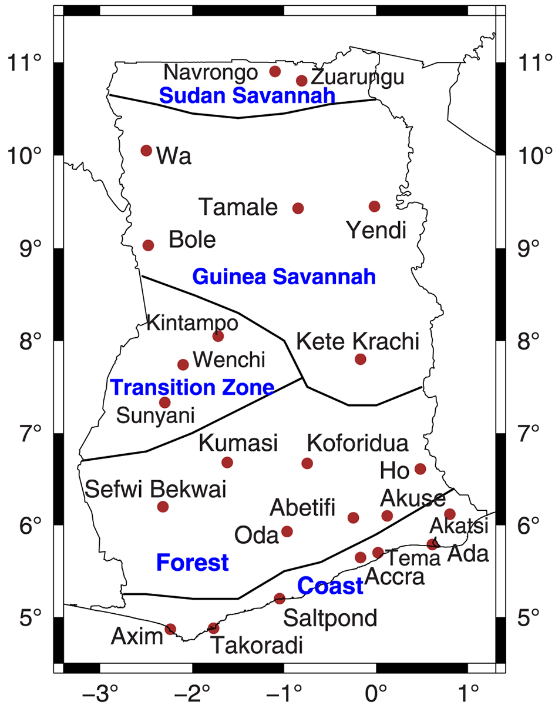
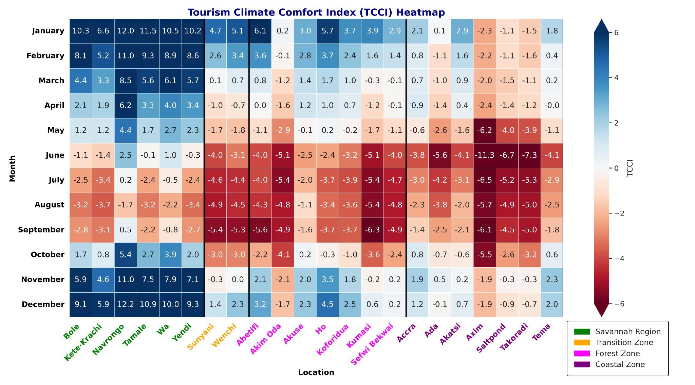
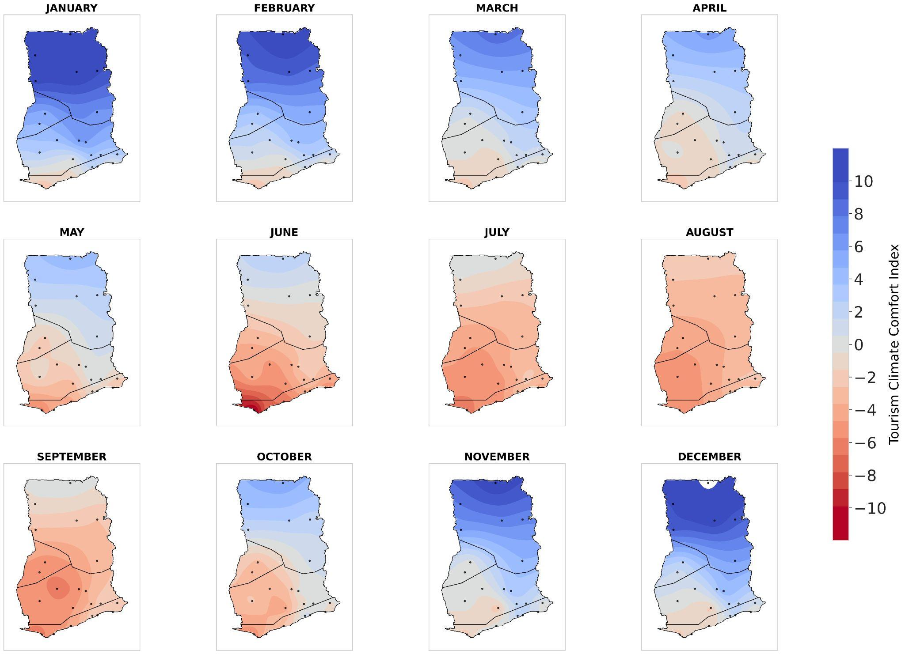

Status
Collaborative manuscript in preparation.
Objective
Analyze tourism climate comfort across Ghana using the Tourism Climate Comfort Index.
Datasets
Meteorological data from 22 synoptic stations across Ghana, 1981-2023.
Methods
TCCI calculation, missing-data estimation, monthly aggregation, and spatial interpolation.

Ghana synoptic stations used for the TCCI analysis.

Monthly Tourism Climate Comfort Index variation.

Tourism climate comfort heatmap across stations and months.

Spatial distribution of tourism climate comfort across Ghana.
Key Outputs / Current Progress
- TCCI synthesizes temperature, humidity, rainfall, and sunshine duration into a standardized tourism climate comfort measure.
- Favorable tourism conditions typically occur from November to March.
- Discomfort is more common from May to August, especially in the Coastal and Forest zones.
Research Significance
The project supports climate-informed tourism planning, destination management, and infrastructure decisions in Ghana.